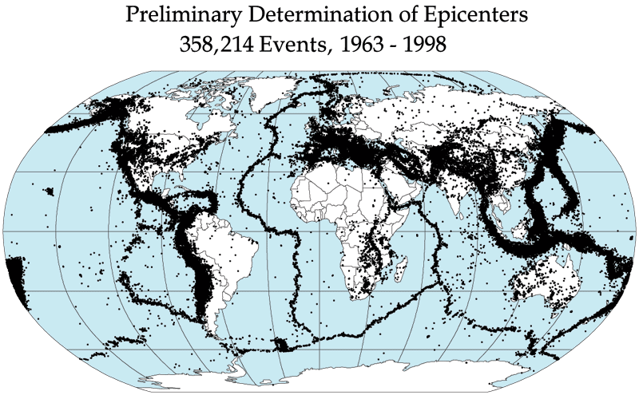
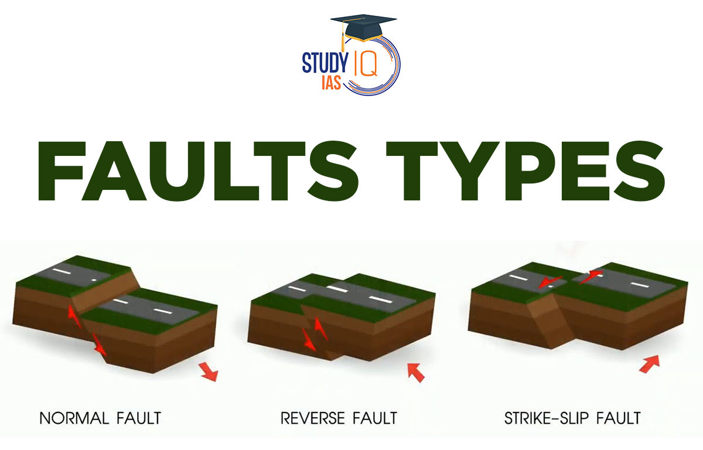

Earthquake Data: 1898–2019
This interactive chart shows earthquake records from 1898 to 2019.

Learning about the shaking of the Earth
An earthquake is the shaking of the Earth's surface caused by a sudden release of energy inside the Earth. The point where the energy is released underground is called the hypocenter, and the point on the surface right above it is called the epicenter.
Earthquakes happen mostly along faults, which are cracks in the Earth's crust. They can be too small to feel, or strong enough to destroy entire cities.
There are three main types of faults that cause earthquakes:

Earthquake locations from 1963–1998, tracing the edges of tectonic plates.
Earthquakes often come in sequences. An aftershock is a smaller earthquake that follows a larger one, while a foreshock comes before it. Sometimes a whole area gets a "swarm" of similar-sized quakes with no single big one.
The largest earthquake ever recorded was a magnitude 9.5 in Chile in 1960. One of the deadliest was the 1556 Shaanxi earthquake in China, which killed hundreds of thousands of people.

The three main fault types responsible for most earthquakes.
Watch this video to learn how earthquakes happen.
This interactive chart shows earthquake records from 1898 to 2019.